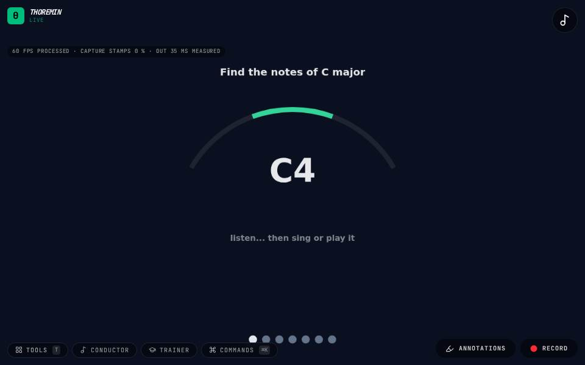

Match the Note

What to do
- Allow the microphone and press Start.
- Listen to the note, then sing or play it; the needle shows how far off you are.
- Hold it in the green until the ring fills, and the next note comes.
A tuner made into a drill: the game plays a note, you find it with your voice or an instrument and hold it in tune.
How it works
The game listens only after its own note has died away, so it never hears itself as you. The needle shows how many cents (hundredths of a semitone) you are from the note, in any octave; the green band is the tolerance (a quarter of a semitone either side on normal). Hold the note inside it for a second and it counts. The score is how quickly you found each note and how steadily you held it.
On a page of its own
Match the Note also runs on a bare page, with no camera and nothing else of thoremin loaded: play/match-the-note.html. Pick a lesson and a difficulty and press Start.
Settings
Listening games in the editor: the lesson, the difficulty (the width of the green band) and transposing, Start and Stop.
Its settings: Listening games. Every knob: the manual.